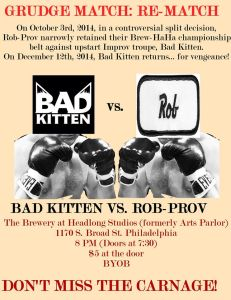

Wait, it’s December already?! Holy guacamole!
Check out what December-y things are happening at Indy Hall!
Or use this link.
Don’t miss the notes below for many more events and details.
#thisweek – highlight reel
C is for Cookie Swap!
Jam goddess Molly Haendler is holding a cookie swap Thursday, 12/11 at 6 pm in Indy Hall! Bring your favorite type of cookie (or your favorite type of drink, if you’re not a baking fan), and come swap and hang out with us! Nothing builds community and cheer like sugar.
Let’s Party!
Secret Santas have gone out! If you missed out on registering, there will also be a Yankee Sock Swap, which does not require signing up- just wrap up a pair of socks (or another small gift, but socks are the most fun!), and we’ll fight to the death over them! By that I mean, trade around in a fun and amicable way.
You can also contribute to the holiday spirit around Indy Hall with our Holiday Potluck! We’ll dig in after the gift exchange- bring libations or something delicious, and we’ll eat, drink, and be merry! Join us!
Hey Artists!
Have you noticed the classroom-side window is a little… faded? Sean Martorana is taking submissions of ideas for a new display in that window! Talk to him or message him on Slack for more details.
#thisweek – daybyday
Wednesday
- Join the B TEAM for a comic book frolic at Noon, gathering in the gallery to walk to Brave New World.
- Â Are you full of craft? Come knit, crochet, embroider, draw, or whatever else you’d like to do to unwind! We’ll meet at 2pm at the upstairs couches for about an hour. Want to learn one of these skills? Come on by!
- Mural Arts will be here to set up their pop-up boutique! Interested in submitting some of your work? Talk to Sean Martorana for more information, and check out the #indyarts channel!
Thursday
- Interested in writing right? Indy Hall Writer’s Group will be meeting at 12:30 (or after Show and Tell, whichever comes first) at the larger tables upstairs. Talk to Jacki or Erika for more information!
- Cathy Goodwin is having a milestone birthday! Between 4:30 and 5:30 pm we’ll be celebrating her time on earth and time at Indy Hall with chocolate cake! For her birthday we’ll sing “I Did It My Way,” and if you’d like to give her a gift, she’s posted instructions for how to donate to her favorite charity, Philadoptables. Cake, Charity, and Cathy? How can you resist??
- It’s the very last Bond Night!? The sky is falling, the sky is falling! No wait… it’s SKYFALL! The most recent and best Bond movie, if you think that things that are recent are best, like I do. I remember none of the previous Bonds, probably because I’ve never been to Bond Night. This is my (and your) last chance! 6pm in the classroom… and I’ve heard a rumor there will be hot chocolate. 🙂

- Crit Time! Join Michael Norcross and other artsy members for a quick crit at 6pm.
- Night Owls, 6-10(ish) pm, will be hosted by the most delightful Shayna!

Friday
Do you listen to Serial? Kate and other Serial fans are gathering at 12:30 in the classroom area to listen to the 10th (and maybe final?) episode of Serial, and to discuss who we think is guilty or innocent.
Saturday
- Indy Hall takes over PHIT! As you may remember, Greg Maughan, the director of Philly Improv Theater, gave us a sweet discount code for 50% off tickets! So let’s use them! Neil Bardhan is leading a trip to PHIT for their Saturday night shows at 9:00 and 10:30 pm, with possible hanging out before or after. The groups performing on the 6th are some of my favorites, so don’t miss it!
- Prefer something more… wrestling-y? Michael Norcross and Rob Jackel are checking out Chikara Pro Wrestling on December 6th. The event starts at 7pm, and tickets are available here.
- You kids like that hip hop music? Finn’s monthly DJ set at Bottle Bar East is Saturday night, from 10pm-2 am. Don’t miss his groupbuzz post for some excellent links to his mixcloud.
#comingupsoon
Thursday, December 11th
It’s an Indy Hall-I-Day Cookie Swap! Bring a bunch of cookies or another delicious treat to swap and share! Swapping will start at 6pm- come hang out and make some new sweet-toothed friends! Wild cookie monsters couldn’t keep me away!
Friday, December 12th
Bad Kitten at the Brewery! Come see Neil and I (and the rest of our fantastic improv group) compete in the Brew Ha Ha, a cage match style improv competition. We are taking on reigning champions RobProv, who beat us back in October with a controversial tie-breaker. Tickets are $5 at the door, and it’s BYOB.
Monday, December 15th
Indy Hall/ National Mechanics Blood Drive will be at National Mechanics. More information is here, or talk to Reed!
Thursday, December 18th
Indy Hall’s Holiday Potluck and Secret Santa Swap! 6pm- It’ll be a holi-daze of delicious food, drink, and cozy Indy Hall member funtimes!